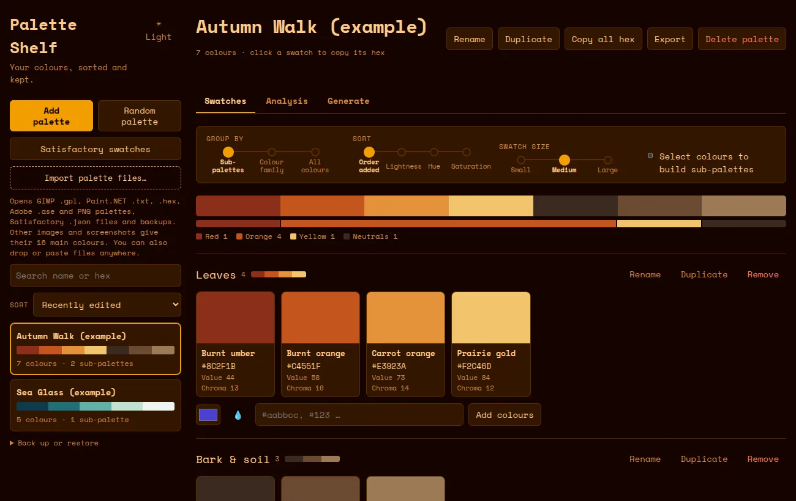
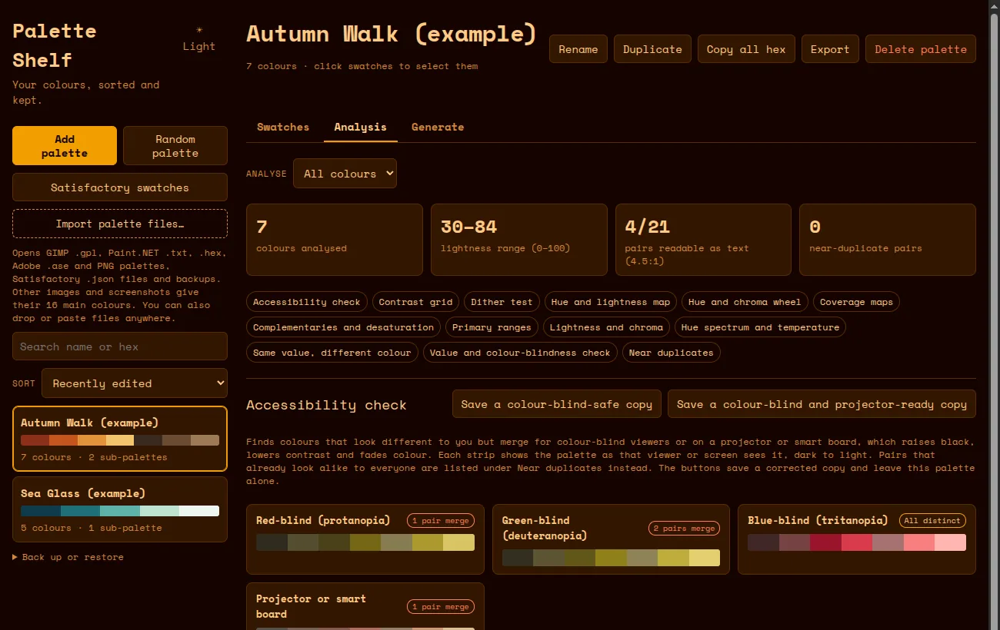
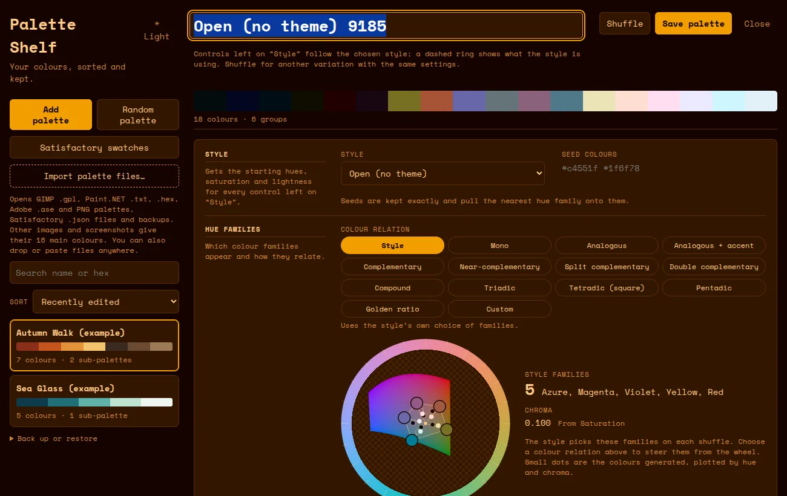
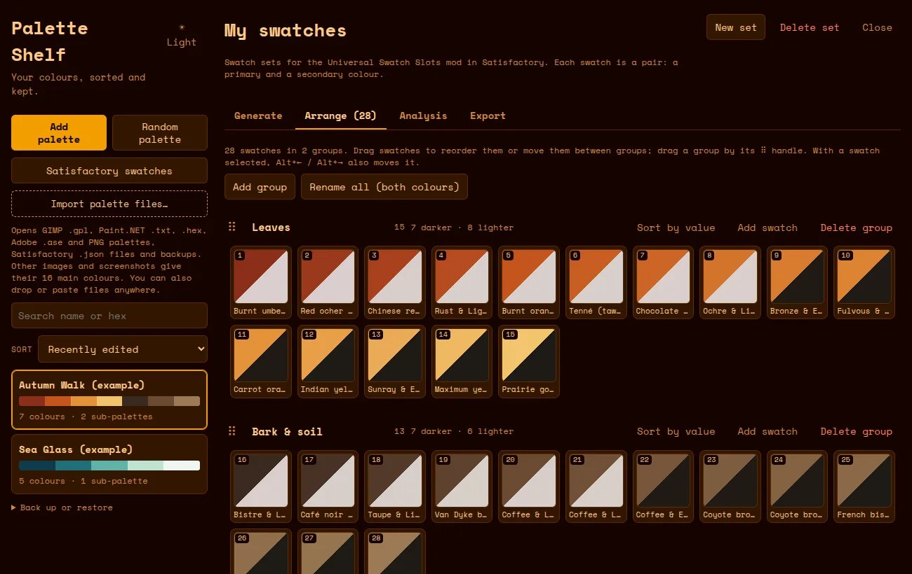
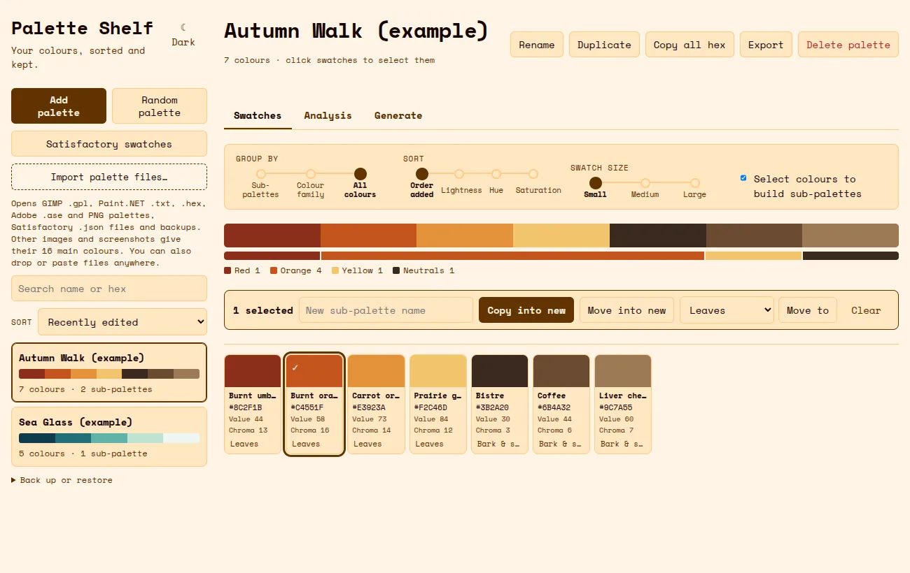

A personal colour-palette manager for Linux. Collect, analyse and generate palettes, then export them for pixel art, slides, code or Satisfactory.

Palettes with sub-palettes. Edit any colour with OKLCH sliders, drag swatches between groups, sort by lightness or hue, and undo with Ctrl+Z.
Contrast grid, colour-blind and projector checks, a dither test, hue and lightness maps in the style of Lospec and DawnBringer, and near-duplicate detection. Click a clashing pair to separate it.
A seeded random generator with a harmony wheel and styles from '90s computing to Cyberpunk neon. It also fills in between colours, extends ramps and restyles your own palettes.
GIMP .gpl, Paint.NET .txt, .hex, Adobe .ase and PNG palette strips. Drop in a screenshot or photo to get its 16 main colours.
Palette files for GIMP and Paint.NET, a PNG strip for Aseprite and game engines, a labelled swatch sheet for slides, CSS variables, JSON, or a plain names-and-hex list.
Builds Universal Swatch Slots sets (primary and secondary pairs) from any palette or style, with contrast rules, drag-to-arrange and a ready-to-load .json.




| File | Best for | Size |
|---|---|---|
| .deb | Ubuntu, Mint, Debian, Pop!_OS. Uses the system's WebKitGTK, so it is small and light on memory. | 1.6 MB |
| .rpm | Fedora, openSUSE. Same as the .deb. | 1.6 MB |
| AppImage (Tauri) | Any distro, with no install needed. Carries its own WebKitGTK. | 80 MB |
| AppImage (Electron) | Any distro. The only build with the screen eyedropper (💧), because it runs on Chromium. | 120 MB |
| Standalone .html | Windows, macOS or anywhere with a browser. Open the file; it needs no internet. | 0.3 MB |
To install the .deb, run:
sudo apt install ./palette-shelf_2.1.0_amd64.debTo run an AppImage, make it executable first: chmod +x Palette-Shelf-*.AppImage. Each build and the browser version keep their own saved palettes. To move them, use Back up or restore → Save backup file, then Open backup file in the other copy.